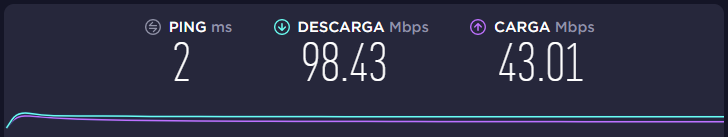

He estado estudiando desarrollo de aplicaciones en Unity tanto 3D como 2D e intentar desarrollar productos para sacar algo de dinero de ahí. :D
Aun que últimamente no toco la computadora para jugar (ni consolas) es algo que me gusta mucho hacer más con juegos de autos y disparos.
Estudiar es bueno pero distraerse también lo es, en mis tiempos libres me gusta preparar cosas sencillas como postres o salsa dulces, o hacer cosas cómo pintar o armar figuras de papel (no origami si no papercraft).
